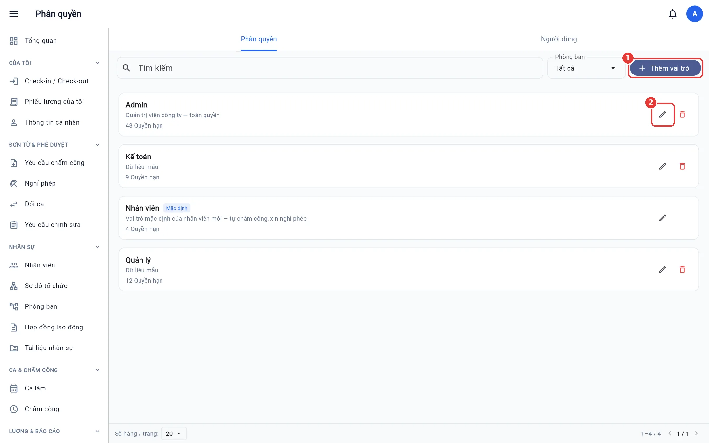
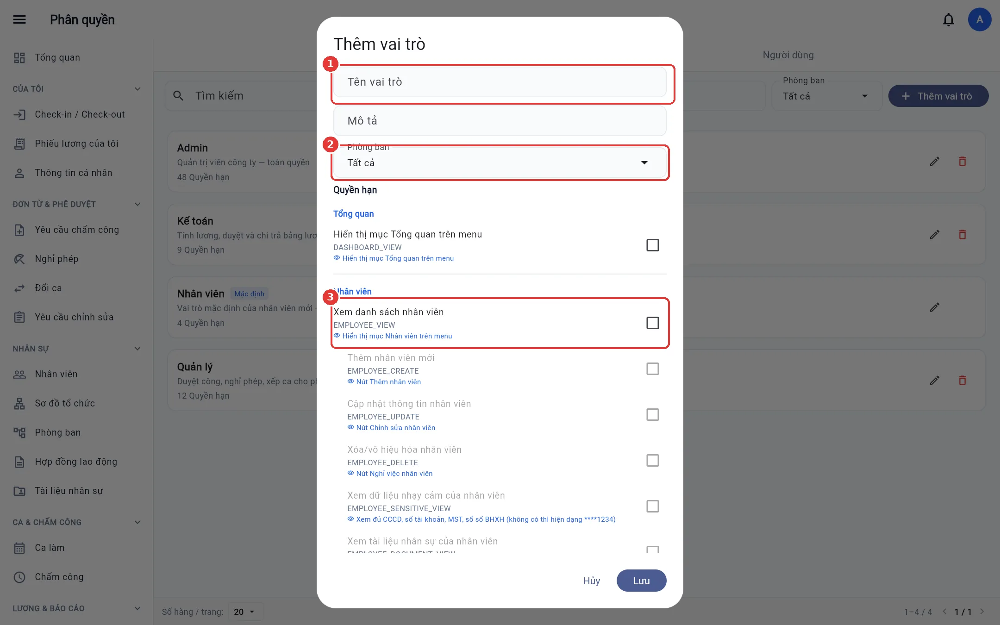
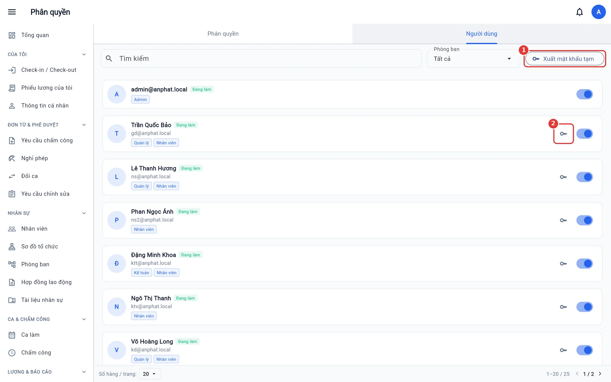
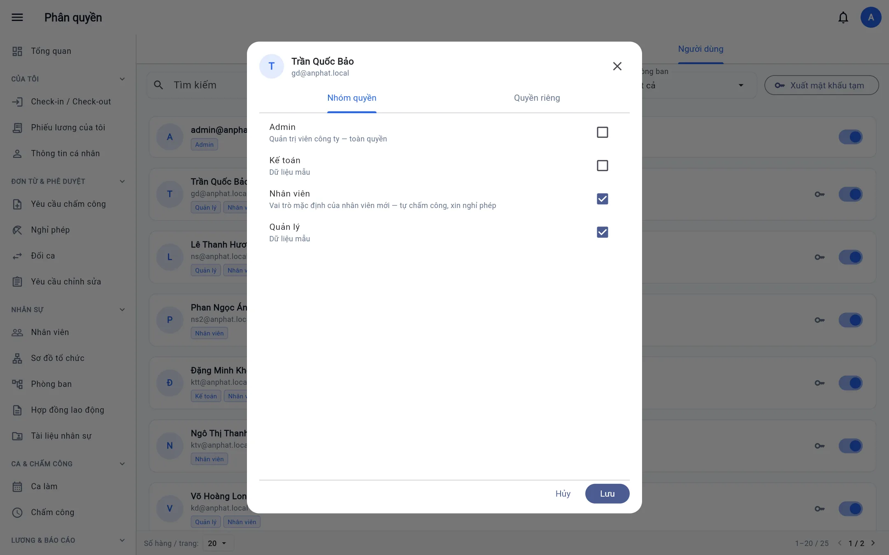
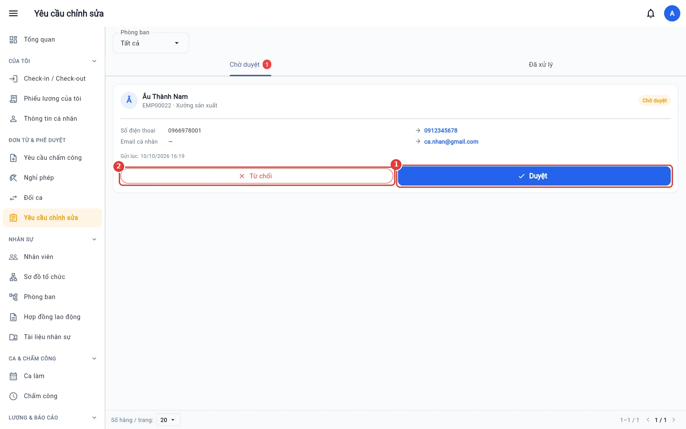

Phân quyền và người dùng
Vai trò và quyền, phạm vi phòng ban, gán vai trò, đặt lại / xuất mật khẩu tạm, gỡ 2FA, duyệt yêu cầu sửa hồ sơ.
Dành cho: Quản trị công ty
Vai trò
Mở Phân quyền → tab Phân quyền. Có sẵn Admin (toàn quyền) và Nhân viên (mặc định cho người mới: tự chấm công, xin nghỉ…). Tạo thêm vai trò cho quản lý, nhân sự, kế toán.


Tạo vai trò
- Bấm Thêm vai trò, nhập Tên và Mô tả.
- Phòng ban: Tất cả = cả công ty, hoặc chọn phòng để giới hạn phạm vi dữ liệu.
- Tích các quyền, nhóm theo module. Mỗi quyền có mô tả nó mở nút / màn nào. Quyền Xem là điều kiện của các quyền khác trong module.
- Có thể đặt phạm vi riêng cho từng quyền (chỉ bản thân, phòng tôi, phòng tôi và cấp dưới, hoặc chọn phòng) → Lưu.


Người dùng
Tab Người dùng: mọi tài khoản đăng nhập. Mỗi thẻ hiện vai trò, trạng thái.
- Bấm vào người để gán vai trò (tab Nhóm quyền) hoặc cấp quyền riêng (tab Quyền riêng). Nhiều vai trò cộng dồn theo hướng rộng nhất.
- Công tắc — khoá / mở tài khoản (khoá = đăng xuất ngay mọi máy).
- Chìa khoá — Đặt lại mật khẩu: cấp mật khẩu tạm mới (hiện một lần để bạn chép gửi cho người đó), người dùng phải đổi khi đăng nhập.
- Biểu tượng khoá điện thoại — gỡ xác thực 2 lớp cho người mất điện thoại.




Xuất mật khẩu tạm (phát tài khoản hàng loạt)
Sau khi nhập nhân viên từ Excel, tài khoản mới có mật khẩu ngẫu nhiên. Bấm Xuất mật khẩu tạm: hệ thống cấp mật khẩu tạm mới cho mọi tài khoản trong phạm vi của bạn chưa đổi mật khẩu lần đầu, tải về file Excel (mã NV, họ tên, phòng ban, email, mật khẩu tạm).
Quan trọng: File mật khẩu là dữ liệu nhạy cảm — phát xong thì xoá. Xuất lại lần nữa thì mật khẩu tạm cũ hết hiệu lực.
Duyệt yêu cầu sửa hồ sơ
Mở Yêu cầu chỉnh sửa (nhóm Đơn từ & phê duyệt). Mỗi yêu cầu so sánh giá trị hiện tại và giá trị xin đổi. Bấm Duyệt để cập nhật hồ sơ hoặc Từ chối (ghi lý do). Tab Đã xử lý giữ lịch sử, gồm cả giá trị trước khi sửa.


Bạn chỉ thấy / duyệt được yêu cầu của nhân viên trong phạm vi quyền Cập nhật nhân viên, và không tự duyệt yêu cầu của mình.